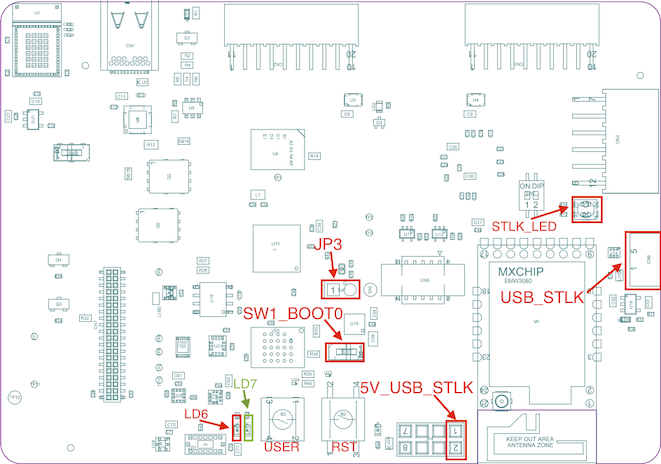
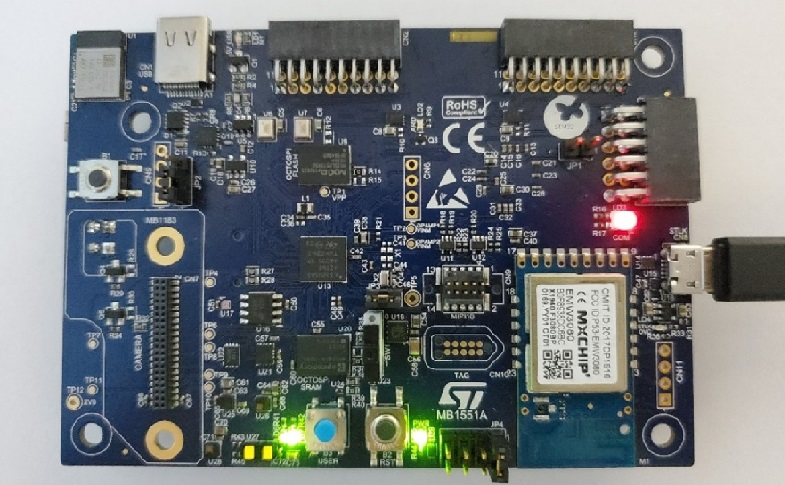
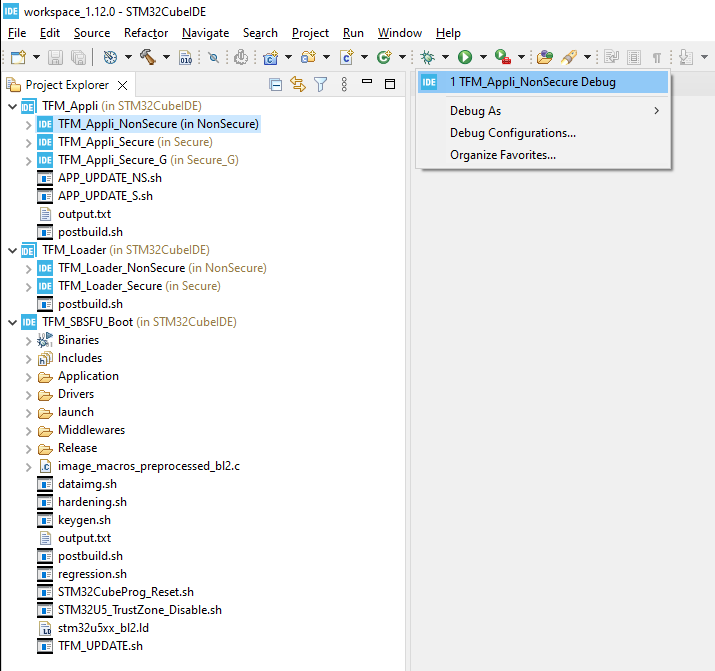
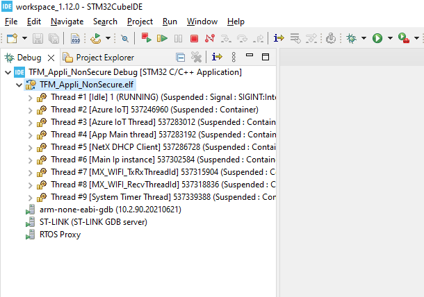

The USB STLK port is located to the right of the MXCHIP WiFi module in the figure. It is used for power supply, programming, debugging, and interacting with the application via UART over USB.
The project build system needs a unix or posix-like shell. There are
many options for installing such a shell on windows.
This guide assume you are using GitBash which is included in the Git for
Windows package.
Any other compatible shell will work, except the one provided by the
windows subsystem for windows (wsl).
In order to use the project scripts and the related STM32CubeIDE launch files, you must include bash.exe in your system path.
Locate your preferred version of bash.exe and determine the windows path to it.
For reference, the default location for GitBash is
C:\Program Files\Git\bin.
Run the following command to open the environment variable editor from Control Panel:
rundll32 sysdm.cpl,EditEnvironmentVariablesSelect the “Path” user environment variable and click “Edit”.
Select “New” and then paste the path to the directory containing bash.exe found above.
Press OK and OK to exit the environment variable editor.
Log out of your windows session and then log back in to allow the environment variable changes to take effect.
Install dependencies using your distribution’s package manager and add the required additional python modules:
sudo apt install python3 python-is-python3
pip install numpy intelhex jinja2sudo dnf install -y python3 python-is-python3
sudo dnf groupinstall -y "Development Tools" "Development Libraries" --skip-broken
pip install numpy intelhex jinja2Download the latest version of STM32CubeIDE from the STMicroelectronics website.
At the time of this writing, Version 1.12.0 was the latest release: - STM32CubeIDE
Abridged installation instructions are included below. Please refer to the STM32CubeIDE Installation guide and the included instructions for your platform if additional help is needed.
The projects in this repository have been verified with versions 1.12.0 of STM32CubeIDE.
Open a terminal window and follow the steps below to install STM32CubeIDE on a Debian based Linux machine.
Download the STM32CubeIDE Linux generic installer package
wget <URL HERE>Extract the package
unzip en.st-stm32cubeide_*_amd64.deb_bundle.sh.zipAdd execute permissions to the install package
chmod +x st-stm32cubeide_*_amd64.deb_bundle.shExtract the debian packages from the bundle:
mkdir -p cubeide_install
./st-stm32cubeide_1.9.0_12015_20220302_0855_amd64.deb_bundle.sh --tar xvf --directory cubeide_install .Install the debian packages
export LICENSE_ALREADY_ACCEPTED=1
sudo apt install -y ./cubeide_install/st-stm32cubeide-1.9.0-12015-20220302-0855_amd64.deb ./cubeide_install/st-stlink-udev-rules-1.0.3-2-linux-all.deb ./cubeide_install/st-stlink-server-2.1.0-1-linux-amd64.debStart the IDE
/opt/st/stm32cubeide_1.9.0/stm32cubeide_wayland
# Or
/opt/st/stm32cubeide_1.9.0/stm32cubeideOpen a terminal window and follow the steps below to install STM32CubeIDE on a Redhat based linux machine.
Download the [STM32CubeIDE linux rpm installer package][ide_url_rpm]
wget <URL HERE>Extract the package
unzip en.st-stm32cubeide_*amd64.rpm_bundle.sh.zipAdd execute permissions to the install package
chmod +x st-stm32cubeide_*amd64.rpm_bundle.shStart the installation script and follow the prompts on the command line.
sudo ./st-stm32cubeide_1.9.0_12015_20220302_0855_amd64.rpm_bundle.shOpen a terminal window and follow the steps below to install STM32CubeIDE on a generic linux machine.
Download the STM32CubeIDE [linux generic installer package][ide_url_lin]:
wget <URL>Extract the package
unzip en.st-stm32cubeide*amd64.sh.zipAdd execute permissions to the install package
chmod +x st-stm32cubeide_*amd64.shStart the installation script and follow the prompts on the command line.
./st-stm32cubeide_1.9.0_12015_20220302_0855_amd64.shNote: If you are not asked to select a workspace when STM32CubeIDE start, you may access this dialog via the File -> Switch Workspace -> Other menu item.
Note:
* Ensure that Search nested projects is selected
* Ensure that copy projects into workspace is not selected
After importing the workspace into STM32CubeIDE, you will end up with several projects organized in 3 top level groups.

TFM_Appli
* TFM_Appli_NonSecure : Actual Azure IoT
application
* TFM_Appli_Secure : Secure API for the NonSecure
application
* TFM_Appli_Secure_G : Special project to generate
Secure API source files based on selected TFM partitions.
TFM_Loader
* TFM_Loader_NonSecure : A special application to
upload new TFM_Appli (secure and non-secure) via the serial port
(Y-Modem).
* TFM_Loader_Secure : Secure part of the Loader
application.
TFM_SBSFU_Boot : Secure Bootloader based on the TFM implementation.
In the Project Explorer pane of STM32CubeIDE, select
the non-secure project by clicking it’s name
TFM_Appli_NonSecure
Then click on the arrow next to the hammer icon to select the
configuration you want to build (Wifi, Cellular BG96 or Cellular
Type1SC)

Next, click on hammer icon to build the project.
The project are linked together, so building TFM_Appli_NonSecure will
trigger the build process of all related projects (ie, TFM_Appli_Secure,
TFM_Appli_Secure_G, TFM_Loader_NonSecure, TFM_Loader_Secure,
TFM_SBSFU_Boot)
Note: You may also build the current project using the Project->Build Project menu item.

Automated script to configure your Azure environment, provision your board and flash the firmware are provided in the AzureScripts directory.
Please refer to one of the following documentation :
The external tools shortcuts can only flash and manage your board’s
firmware.
If you need to configure your Azure environment and provision your
board, please proceed with the QuickConnect documentation referenced
above.

Several tools are pre-configured:
1. Disable TZ: if you want to revert your board to non-tfm
configuration.
2. Generate Data img: This script will generate the initial data images
(secure and non-secure).
This script needs to be run once before flashing your board.
3. Regression: This script will prepare you board for TFM
application.
It will enable the Trust-Zone and set various parameters.
This script needs to be run only once before anything else.
4. Reset board: restart the MCU by issuing a hard-reset command.
5. TFM Update (Appli_NonSecure): flash only the non-secure
application.
Used if you’ve only rebuild the non-secure application.
6. TFM Update (Appli_Secure): flash only the secure application.
Used if you’ve only rebuild the secure application.
7. TFM Update (all): flash all application parts (Appli, loader, data
and bootloader)
Before anything else, you must prepare your board with the
regression’s script (this needs to be done only
once)
Then you should flash all the application parts with the
TFM_UPDATE script.
The application output can be monitored thru the serial port.
The project workspace provides a pre-configured debug
environment.
> The board should have be flash with the build firmware prior to
starting the debug session.
Click the black arrow next to the bug icon and select TFM_Appli_NonSecure Debug

STM32CubeIde will then connect to the running process on the board and start the debugging session.
